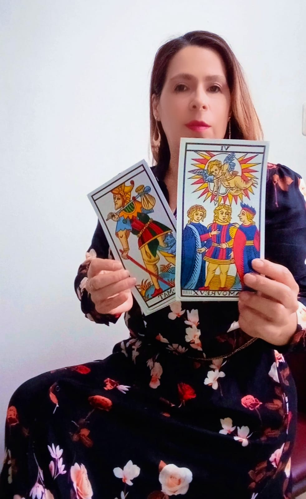
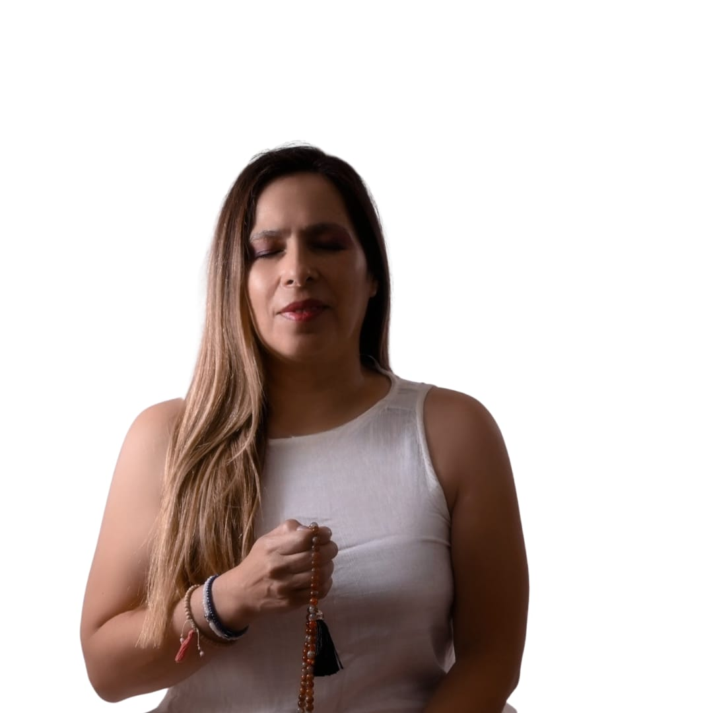

Acompaño tu camino con claridad, energía amorosa y propósito.
Momentos

Tarot
Acompañamiento

Reiki
Si para vos el equilibrio entre cuerpo, mente y espíritu es esencial, este espacio es para vos.
Te acompaño a armonizar tu energía, aliviar tensiones y recuperar calma interior, integrando Reiki
y meditaciones guiadas para que cuentes con tus propias herramientas de bienestar.
Consultame por los paquetes disponibles y encontrá el formato que mejor se adapte a tu momento.